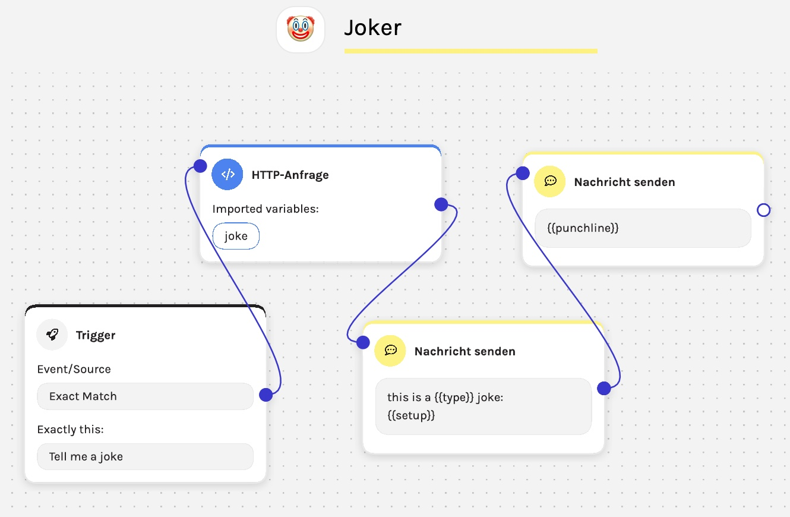

Charles
Software Engineer Sep 2022 – Jul 2024
At Charles I primarily focused on building out a tool that automates WhatsApp conversation flows and marketing campaigns. With conditional logic it allows users to segment customers based on specific criteria, helping brands target users based on engagement or potential value.